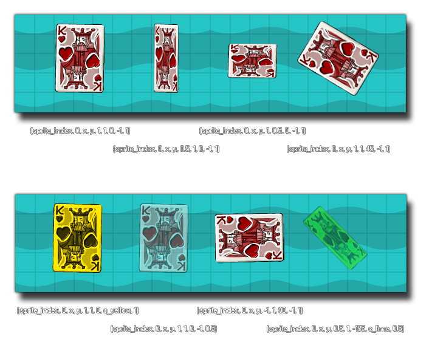

draw_sprite_ext( sprite, subimg, x, y, xscale, yscale, rot, colour, alpha );
| 参数 | 描述 |
|---|---|
| sprite | The index of the sprite to draw. |
| subimg | The subimg (frame) of the sprite to draw (image_index or -1 correlate to the current frame of animation in the object). |
| x | The x coordinate of where to draw the sprite. |
| y | The y coordinate of where to draw the sprite. |
| x轴缩放 | The horizontal scaling of the sprite, as a multiplier: 1 = normal scaling, 0.5 is half etc... |
| y轴缩放 | The vertical scaling of the sprite as a multiplier: 1 = normal scaling, 0.5 is half etc... |
| rot | The rotation of the sprite. 0=right way up, 90=rotated 90 degrees counter-clockwise etc... |
| colour | The colour with which to blend the sprite. c_white is to display it normally. |
| alpha | The alpha of the sprite (from 0 to 1 where 0 is transparent and 1 opaque). |
返回： N/A（无返回值）
This function will draw the given sprite as in the function draw_sprite but with additional options to change the scale, blending, rotation and alpha of the sprite being drawn. Changing these values does not modify the resource in any way (only how it is drawn), and you can use any of the available sprite variables instead of direct values for all the arguments in the function. 下图展示了不同的值如何对绘制精灵生效：The image below illustrates how different values affect the drawing of the sprite: 
draw_sprite_ext(sprite_index, image_index, x, y, image_xscale, image_yscale, image_angle, image_blend, image_alpha);
This will draw the instances assigned sprite with all its default values (essentially the same as using draw_self).